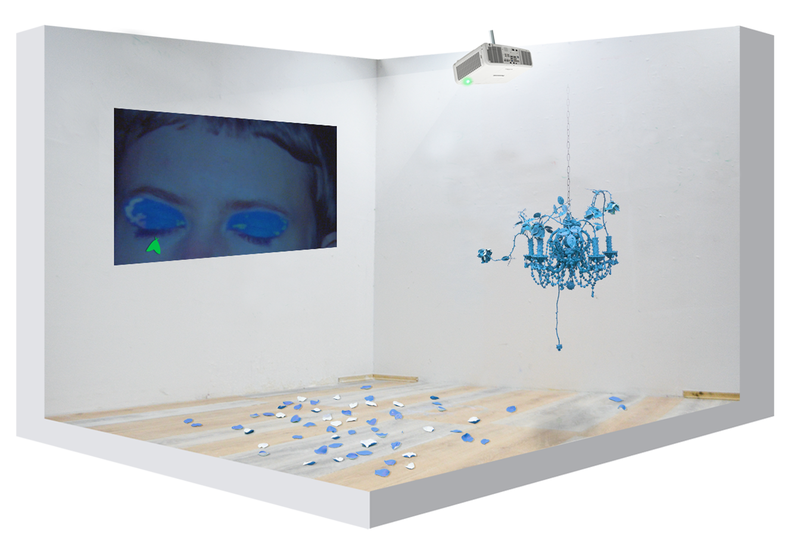

Christofer Degrér & Karin Lindstén
Sleep Seeds
Wings and petals at the window frame.
Bzzzzzzzzzzzzzzzzzzzzzzzzzzzzzz
zzzzzz
zzz
Z “
X
The angel of history x
drone xxx and executor of divine violence”
Blue as in: Just in time! As in always arriving just in time to be too late.
Projection / moon
Inscription / the rip in skin caused by a torn
A long last(ing)
Fixed eternity.
Drunk off shampoo and high on nectar, aflame in plasma, electric by setting suns, soon
again, a mute buzzing,
flicker, lightyears.
Awake from a dream about sleeping.
An incomplete set of here, now, here now, here and out, the synchrony of a disappearance.
Already world for world.
Star-crossed stars as distinctly unavailable blossoms. Forever ago by this time
under an undulating, unreflected and flat,
Sky.
-Christofer Degrér & Karin Lindstén
Christofer Degrér (b. 1990, Malmö) received a MFA from the Royal Institute of Art, Stockholm in 2018; and a BFA from Ringling College of Art & Design, Sarasota, Florida in 2012. His work has been featured
in exhibitions at Index- The Swedish Contemporary Art Foundation, Stockholm; Carroll / Fletcher, London; Rodi Gallery, New York City; and Canopy, Malmö.
Karin Lindstén (b.1994, Linköping) graduated in 2021 from the MFA-programme at the Royal Institute of Art, Stockholm. She received a BFA from Malmö Art Academy, 2019. Her work has been shown at DELFI, Malmö, Cinema Kino, Lund, and recently at the Royal Swedish Academy of Fine Arts, Stockholm.

